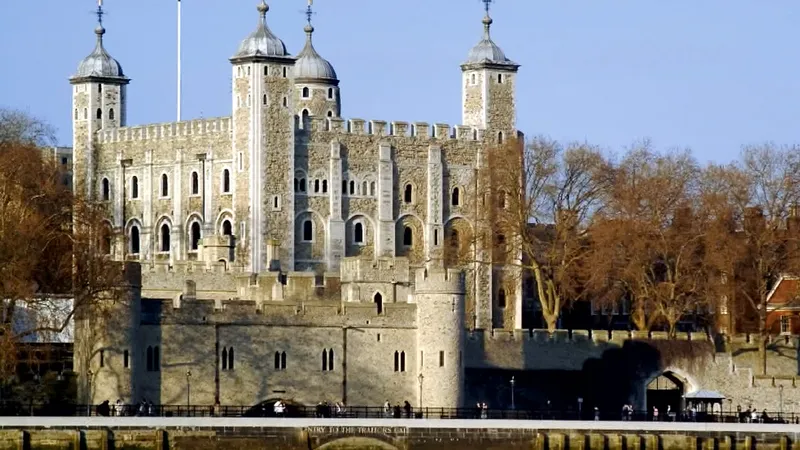
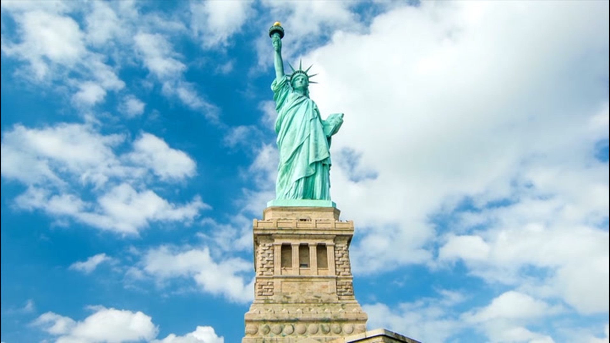

Travel
Paris, France
Known as the "City of Love" and renowned for its art, culture, and iconic landmarks like the Eiffel Tower and Louvre Museum, Paris consistently ranks among the top travel destinations globally.
Things to do:
- Visit the Eiffel Tower
- Explore the Louvre Museum
- Stroll along the Seine River and Notre-Dame

Bangkok, Thailand
Bangkok is a vibrant city known for its bustling street markets, rich history, and vibrant street life. It's a gateway to exploring Thailand's beautiful landscapes and cultural heritage.
Things to do:
- Visit the Grand Palace and Wat Phra Kaew (Temple of the Emerald Buddha)
- Explore the Markets and Street Food
- Take a Boat Ride on the Chao Phraya River:

London, United Kingdom
London attracts tourists with its historic landmarks, including the Tower of London and Buckingham Palace, as well as its diverse cultural scene and world-class museums.
Things to do:
- Visit the British Museum
- Explore the Tower of London
- Take a Walk along the South Bank of the Thames

New York City, USA
NYC is famous for its skyscrapers, Broadway shows, and an array of cultural attractions. It's often considered a must-visit destination for travelers seeking a taste of urban excitement.
Things to do:
- Visit Times Square and Broadway
- Explore Central Park
- Visit the Statue of Liberty and Ellis Island
